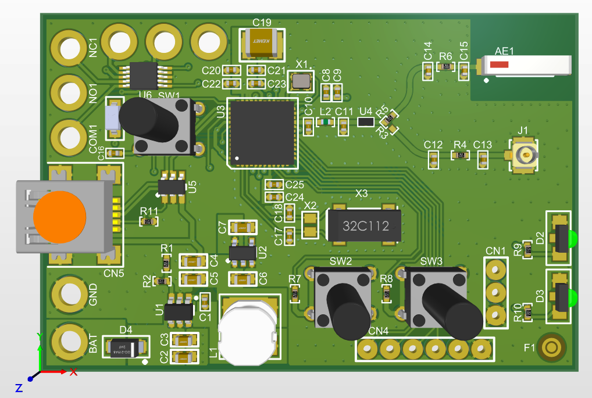
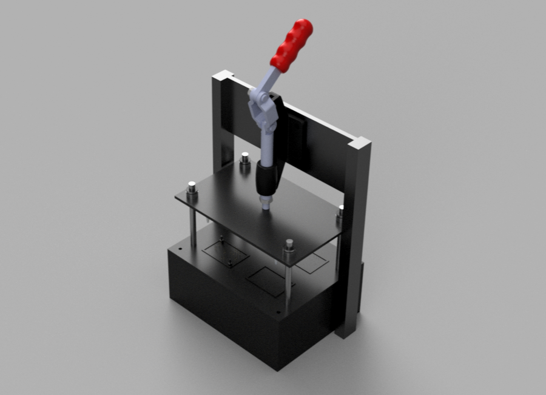
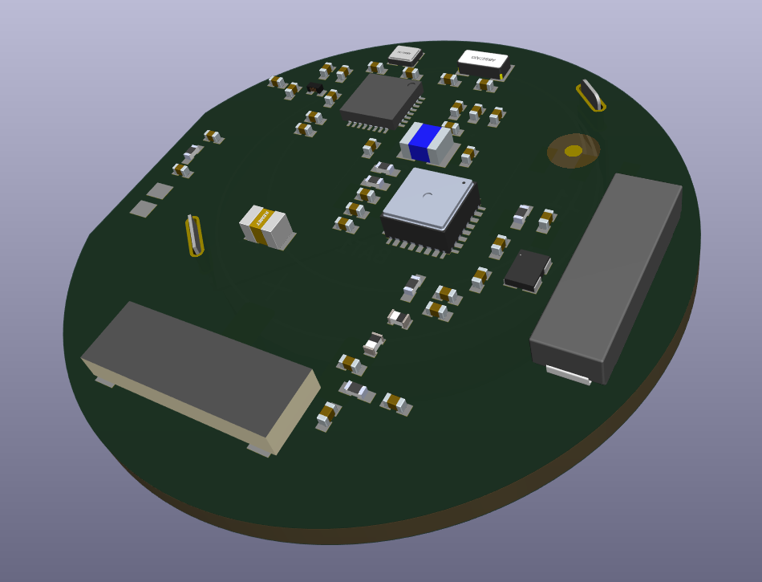

Firmware
Desenvolvimento em C/C++, drivers, máquinas de estados e integração com RTOS.
01ENGENHARIA DE PRODUTO
Desenvolvimento de firmware, hardware e estrutura testes para produtos conectados e confiáveis.
O QUE FAZEMOS
Atuação prática em desenvolvimento eletrônico, software de baixo nível e integração de sistemas — com foco em confiabilidade e aplicação real.
Desenvolvimento em C/C++, drivers, máquinas de estados e integração com RTOS.
01Projeto e revisão de circuitos, esquemáticos, layout de PCB e seleção de componentes.
02Integração de CAN, RS-485, USB, Bluetooth, Wi-Fi, LoRa, GNSS e redes celulares.
03Testes de integração, ferramentas de produção, diagnóstico e análise de falhas.
04Apoio em arquitetura, revisão de projeto, redução de custos e evolução de produto.
05SOBRE A UDINE
Unimos conhecimento de eletrônica e desenvolvimento embarcado para apoiar empresas na criação e evolução de produtos. Da escolha dos componentes ao firmware, da bancada à validação, cada decisão técnica precisa servir ao produto final.
Trabalhamos com abordagem colaborativa, documentação clara e atenção à confiabilidade, à manufatura e ao ciclo de vida do projeto.
PROJETOS EM DESTAQUE
Alguns exemplos do nosso trabalho de desenvolvimento.

HARDWARE · BLUETOOTH
Projeto de placa para controle via Bluetooth de tela retrátil de projeção.

TESTES · HARDWARE
Desenvolvimento de uma jiga de testes automatizada para validação de produtos, integrando aquisição de sinais, gravação, comunicação serial, interface RF e software para execução e registro dos testes.

DESIGN · HARDWARE
Projeto de um sensor de pressão para veículos extra pesados, com baixo consumo e operação em ambiente severo.
PESQUISA · COMUNICAÇÕES
Pesquisa acadêmica sobre desempenho de sistemas MIMO assistidos por superfícies refletoras inteligentes.

HARDWARE · DESIGN
Referência técnica para apoiar o projeto, a revisão e a melhoria de layouts de placas.
TEM UM DESAFIO TÉCNICO?
Conte um pouco sobre o seu projeto e vamos conversar sobre os próximos passos.